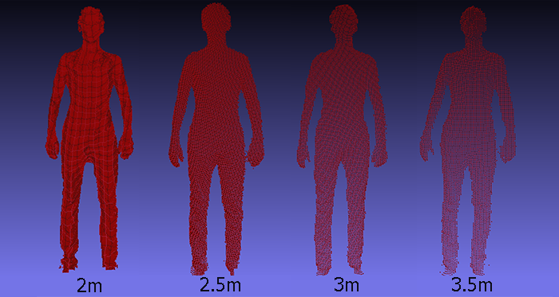
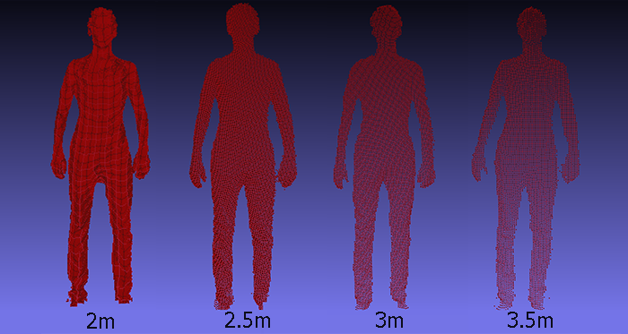

Kinect Bodyscanner
Evaluation
Our Strategy
Our proposed system utilises the Kinect for Windows 2.0 SDK in order to measure depth information, as well as local X/Y positioning relative to the Kinect. We obtain (x,y,z) coordinates for each scanned point on the body. The resolution of the scan is directly influenced by distance from the camera so it is advisable not to scan at long distances. We have imposed a conservative target distance of 2 meters from the camera, allowing us to use the Kinect's full FOV (field of view) while preserving scan quality.
We output the results as a VRML file, having retrofitted the obtained point cloud to fit the ScanMeasure software's requirements. This involves applying a transform rotation matrix to each point, scaling the units and translating so that the lowest x-value is zero. The system also supports .XYZ and .PLY formats as a part of the API.
 

Parameter Optimisation
In order to evaluate our output, we performed repeated and controlled tests, varying distance from the camera, type of clothes worn by the subject as well as height of the Kinect. We found that ScanMeasure could, for the most part, handle longer range scans up to 4 meters. However, the accuracy of the height measurement begins to deteriorate at such range, thus we advise shorter range scans of around 2 meters. Furthermore, we were able to confirm that the type of clothing worn by the subject will marginally affect the accuracy of the scan, though not impinging significantly enough to warrant the measurements utterly void, depending on the application.
We found that ScanMeasure could overcome loss of resolution to a degree, outputting nearly identical results over relatively wide distances. The greatest difference can be seen in the height field, resulting from reduced resolution as scanning occurs further away from the sensor which in turn hinders ScanMeasure's ability to measure the upper and lower bounds of the point cloud.
Experimenting with height adjustments showed little variation over the averaged results. Providing the sensor is positioned away from interfering objects and is able to make use of its full FOV, small adjustments to the height of the Kinect should have little to no effect on the measurement process. We recommend a target height of 20 to 40cm from ground level.
Reasonable differences in clothing type presenting little difficulty when measuring, though please do note that this will not hold in extreme cases. Clothes that drastically deform or conceal body-shape will naturally interfere with the scan, though it is unlikely in such cases that the subject would pass the pose detection stage earlier on. The minor difference, however, between a loose fitting t-shirt and one more fitted, should not affect the measurement output enough that the system should require any specific dress-code.
Comparison to Kinect Fusion Mesh
We also decided to test the ScanMeasure software on 3D data obtained from outside our developed system. By using the Kinect Fusion application from the SDK, which constructs a 3-dimensional mesh based on averaging scans from multiple perspectives. The result was a high-quality scan, capturing far more details than our point-cloud representations; however, such details arrive at the cost of time and memory.
The Fusion mesh not only requires far longer to successfully average and produce an accurate and consistent model, but it also produces unwieldy amounts of data that would be less fitting for our purposes for the following reasons:
- 1) We have intended for the point cloud to be transfered and processed remotely, making a mesh of size >20mb inappropriate for large scale operation.
- 2) The ScanMeasure software was developed to work on the point cloud representations we are providing. Attempts to apply it to a large mesh have proven unsuccessful, giving rise to complications with speed and memory capacity.